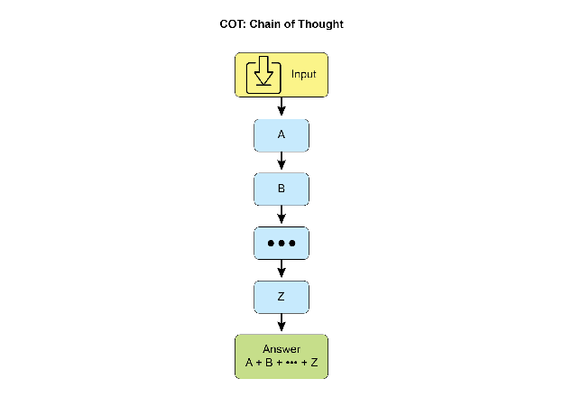
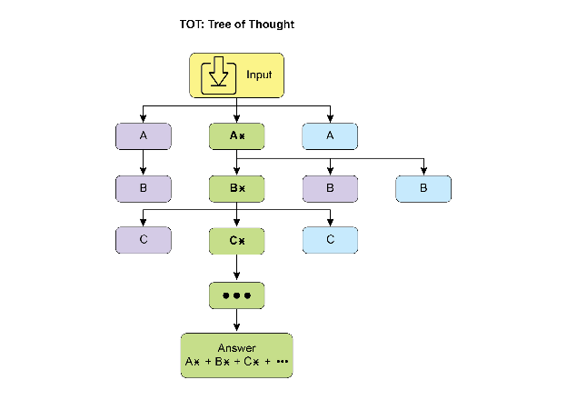
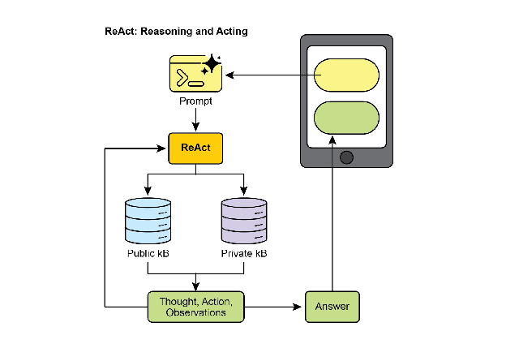
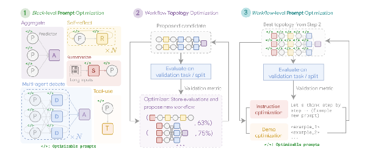
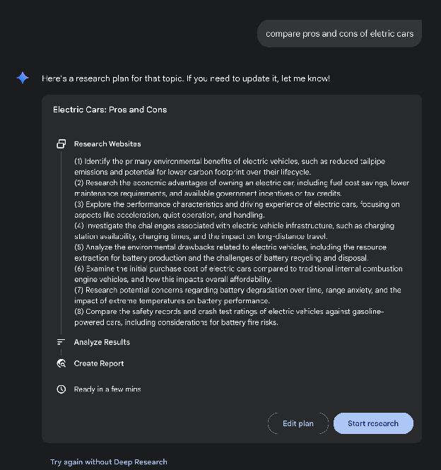
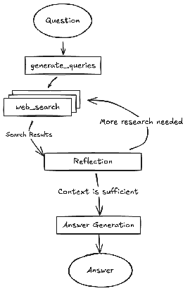
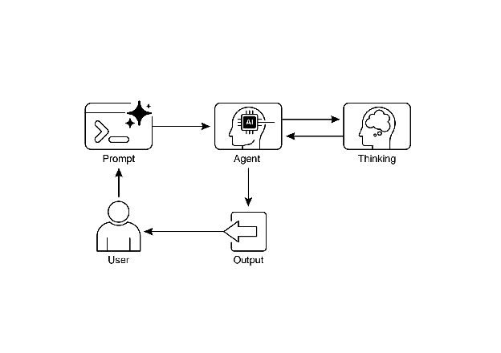

Agent 设计模式 - 17 推理技术
第 17 章：推理技术
本章深入探讨智能 Agent 的高级推理方法，重点关注多步骤逻辑推理和复杂问题解决。这些技术超越了简单的顺序操作，使 Agent 的内部推理过程变得透明可见。通过这种方式，Agent 能够将复杂问题分解为更小的子问题、考虑中间推理步骤，并得出更加可靠和准确的结论。这些高级方法的核心原则是在推理过程中分配更多的计算资源。这意味着给予 Agent 或其底层 LLM 更多的处理时间或推理步骤来处理查询并生成响应。与快速单次处理不同，Agent 可以进行迭代改进、探索多种解决方案或利用外部工具。这种延长推理时间的方法通常能显著提升准确性、连贯性和鲁棒性，特别是在处理需要深入分析和仔细审议的复杂问题时。
实际应用和用例
这些推理技术的实际应用场景包括：
- 复杂问答：支持多跳查询的解决，需要整合不同来源的数据并进行逻辑推理，可能涉及检查多个推理路径，通过延长推理时间来综合信息。
- 数学问题解决：能够将复杂数学问题分解为更小、可解决的组件，展示逐步解题过程，并使用代码执行进行精确计算，延长的推理时间使得更复杂的代码生成和验证成为可能。
- 代码调试和生成：支持 Agent 解释其生成或修改代码的理由，按顺序识别潜在问题，并根据测试结果迭代改进代码（自我纠正），利用延长的推理时间进行彻底的调试。
- 战略规划：通过对各种选项、后果和前提条件进行推理，协助制定全面计划，并根据实时反馈调整策略（ReAct），延长的审议时间可以带来更有效和可靠的规划。
- 医疗诊断：帮助 Agent 系统评估症状、检查结果和患者病史以达成诊断，在每个阶段阐明推理过程，并可能利用外部工具检索数据（ReAct）。增加的推理时间允许进行更全面的鉴别诊断。
- 法律分析：支持分析法律文件和先例以构建论点或提供指导，详细说明所采取的逻辑步骤，并通过自我纠正确保逻辑一致性。增加的推理时间允许进行更深入的法律研究和论证构建。
推理技术
首先，让我们深入了解用于增强 AI 模型问题解决能力的核心推理技术。
思维链（Chain-of-Thought，CoT）提示词通过模拟逐步思考过程，显著增强了 LLM 的复杂推理能力（见图 1）。CoT 提示词不是要求模型直接给出答案，而是引导其生成一系列中间推理步骤。这种显式的分解使 LLM 能够将复杂问题拆分为更小、更易管理的子问题来逐步解决。该技术显著提升了模型在需要多步推理任务上的表现，例如算术计算、常识推理和符号操作。CoT 的主要优势在于能够将困难的单步问题转化为一系列更简单的步骤，从而提高 LLM 推理过程的透明度。这种方法不仅提高了准确性，还为理解模型决策过程提供了宝贵见解，有助于调试和分析。CoT 可以通过多种策略实现，包括提供展示逐步推理的少样本示例，或简单地指示模型"逐步思考"。其有效性源于它能够引导模型的内部处理过程朝着更审慎和逻辑化的方向发展。因此，思维链已成为在当代 LLM 中实现高级推理能力的基石技术。这种增强的透明度和复杂问题分解能力对于自主 Agent 尤为重要，使它们能够在复杂环境中执行更可靠和可审计的动作。

图 1：CoT 提示词以及 Agent 生成的详细的、逐步的响应。
让我们看一个例子。它以一组指令开始，告诉 AI 如何思考，定义其角色和要遵循的清晰五步流程。这是启动结构化思维的提示词。
接下来，示例展示了 CoT 过程的实际应用。标记为"Agent 的思考过程"的部分是模型执行指示步骤的内部独白。这是字面上的"思维链"。最后，"Agent 的最终答案"是由于仔细的、逐步推理过程而生成的精炼的、全面的输出。
1 | |
思维树（Tree-of-Thought，ToT）是一种建立在思维链（CoT）基础上的推理技术。它允许 LLM 通过分支到不同的中间步骤来探索多个推理路径，形成树状结构（见图 2）。这种方法通过支持回溯、自我纠正和探索替代解决方案来应对复杂的问题解决。维护可能性树使得模型能够在最终确定答案之前评估各种推理轨迹。这种迭代过程增强了模型处理需要战略规划和决策的挑战性任务的能力。

图 2：思维树示例
自我纠正，也称为自我改进，是 Agent 推理过程的一个关键方面，特别是在思维链提示词中。它涉及 Agent 对其生成内容和中间思考过程的内部评估。这种批判性审查使 Agent 能够识别其理解或解决方案中的模糊性、信息缺口或不准确性。通过审查和改进的迭代循环，Agent 可以调整方法、提升响应质量，并在提供最终输出前确保准确性和完整性。这种内部批评机制增强了 Agent 产生可靠和高质量结果的能力，如第 4 章的专门示例所示。
这个示例展示了自我纠正的系统过程，这对于改进 AI 生成内容至关重要。它涉及起草、根据原始要求进行审查以及实施具体改进的迭代循环。示例首先概述了 AI 作为"自我纠正 Agent"的功能，并定义了五步分析和修订工作流程。然后，展示了社交媒体帖子的"初稿"。"自我纠正 Agent 的思考过程"构成了演示的核心部分。在这里，Agent 根据其指令批判性地评估草稿，指出诸如低参与度和模糊的号召性用语等弱点。随后提出具体的改进建议，包括使用更有影响力的动词和表情符号。整个过程以"最终修订内容"结束，这是一个整合了自我识别调整的精炼和显著改进的版本。
1 | |
从根本上说，这种技术将质量控制措施直接集成到 Agent 的内容生成过程中，产生更精炼、准确和优质的结果，从而更有效地满足复杂的用户需求。
程序辅助语言模型（Program-Aided Language Models，PALMs）将 LLM 与符号推理能力相结合。这种集成允许 LLM 在问题解决过程中生成和执行代码，例如 Python。PALMs 将复杂的计算、逻辑操作和数据操作卸载到确定性编程环境中。这种方法利用传统编程的优势来处理 LLM 在准确性或一致性方面可能存在局限的任务。当面对符号推理挑战时，模型可以生成代码、执行代码，并将结果转换为自然语言。这种混合方法结合了 LLM 的理解和生成能力与精确计算，使模型能够以更高的可靠性和准确性解决更广泛的复杂问题。这对 Agent 至关重要，因为它允许它们通过在理解和生成能力之外利用精确计算来执行更准确和可靠的动作。一个例子是在 Google 的 ADK 中使用外部工具生成代码。
1 | |
可验证奖励强化学习（Reinforcement Learning with Verifiable Rewards，RLVR）：虽然有效，但许多 LLM 使用的标准思维链（CoT）提示词是一种相对基础的推理方法。它生成单一的、预定的思路，而无法适应问题的复杂性。为了克服这些限制，开发了一类新的专门"推理模型"。这些模型的运行方式有所不同，在提供答案之前专门花费可变量的"思考"时间。这个"思考"过程产生更广泛和动态的思维链，可能长达数千个 token。这种扩展推理允许更复杂的行为，如自我纠正和回溯，模型在更困难的问题上投入更多计算资源。实现这些模型的关键创新是一种称为可验证奖励强化学习（RLVR）的训练策略。通过在具有已知正确答案的问题（如数学或代码）上训练模型，它通过试错学习生成有效的长篇推理。这使得模型能够在没有直接人类监督的情况下发展其问题解决能力。最终，这些推理模型不仅产生答案，还生成展示规划、监控和评估等高级技能的"推理轨迹"。这种增强的推理和策略能力是开发自主 AI Agent 的基础，使它们能够在最少人类干预的情况下分解和解决复杂任务。
ReAct（推理和行动，见图 3，其中 KB 代表知识库）是一种将思维链（CoT）提示词与 Agent 通过工具与外部环境交互的能力相结合的范式。与直接生成最终答案的生成模型不同，ReAct Agent 首先对要采取哪些行动进行推理。这个推理阶段涉及内部规划过程，类似于 CoT，Agent 确定下一步行动，考虑可用工具并预测可能的结果。然后，Agent 通过执行工具或函数调用来行动，例如查询数据库、执行计算或与 API 交互。

图 3：推理和行动
ReAct 以交错的方式运行：Agent 执行一个动作，观察结果，并将此观察纳入后续推理。这种"思考、行动、观察、思考..."的迭代循环允许 Agent 动态调整计划、纠正错误并实现需要与环境进行多次交互的目标。与线性 CoT 相比，这提供了更强大和灵活的问题解决方法，因为 Agent 能够响应实时反馈。通过结合语言模型的理解和生成能力与使用工具的能力，ReAct 使 Agent 能够执行需要推理和实际执行的复杂任务。这种方法对 Agent 至关重要，因为它允许它们不仅进行推理，还可以实际执行步骤并与动态环境交互。
CoD（辩论链，Chain of Debates）是微软提出的一种正式 AI 框架，其中多个不同的模型协作和争论以解决问题，超越了单个 AI 的"思维链"。该系统运作类似于 AI 委员会会议，不同的模型提出初步想法，批评彼此的推理，并交换反驳论点。主要目标是通过利用集体智慧来提高准确性、减少偏见并改善最终答案的整体质量。作为 AI 版本的同行评审，这种方法创建了推理过程的透明和可信记录。最终，它代表了从单独 Agent 提供答案到协作 Agent 团队共同寻找更可靠和验证的解决方案的转变。
GoD（辩论图，Graph of Debates）是一个高级 Agentic 框架，它将讨论重新构想为动态的、非线性网络，而不是简单的链式结构。在这个模型中，论点是由表示"支持"或"反驳"等关系的边连接的各个节点，反映了真实辩论的多线程性质。这种结构允许新的探究线索动态分支、独立演化，甚至随时间合并。结论不是在序列的末尾达成，而是通过识别整个图中最稳健和得到良好支持的论点集群来达成。在这种情况下，"得到良好支持"是指已牢固建立和可验证的知识。这包括被认为是基本事实的信息，即本质上是正确的并被广泛接受为事实的内容。此外，它包括通过搜索基础获得的事实证据，其中信息针对外部来源和现实世界数据进行验证。最后，它还涉及在辩论期间由多个模型达成的共识，表明对所呈现信息的高度一致和信心。这种全面的方法确保了所讨论信息的更稳健和可靠的基础。这种方法为复杂的、协作的 AI 推理提供了更全面和现实的模型。
MASS（可选高级主题）：对多 Agent 系统设计的深入分析表明，其有效性严重依赖于各个 Agent 的提示词质量以及决定其交互的拓扑结构。设计这些系统的复杂性非常显著，因为它涉及一个庞大而复杂的搜索空间。为了应对这一挑战，开发了一个名为多 Agent 系统搜索（Multi-Agent System Search，MASS）的新框架来自动化和优化多 Agent 系统的设计。
MASS 采用多阶段优化策略，通过交错进行提示词和拓扑优化来系统地导航复杂的设计空间（见图 4）。
1. 块级提示词优化：该过程从对各个 Agent 类型或"块"的提示词进行局部优化开始，以确保每个组件在集成到更大系统之前能够有效执行其角色。这个初始步骤至关重要，因为它确保后续的拓扑优化建立在性能良好的 Agent 之上，而不是受到配置不当的 Agent 的累积影响。例如，在针对 HotpotQA 数据集进行优化时，"Debator"Agent 的提示词被创造性地构建为指示它充当"主要出版物的专家事实核查员"。其优化的任务是仔细审查来自其他 Agent 的建议答案，将它们与提供的上下文段落交叉引用，并识别任何不一致或不受支持的声明。这种在块级优化期间发现的专门角色扮演提示词旨在使辩论者 Agent 在被放入更大的工作流之前在综合信息方面非常有效。
2. 工作流拓扑优化：在局部优化之后，MASS 通过从可自定义的设计空间中选择和安排不同的 Agent 交互来优化工作流拓扑。为了使这种搜索有效，MASS 采用影响加权方法。该方法通过测量每个拓扑相对于基线 Agent 的性能增益来计算其"增量影响"，并使用这些分数来引导搜索朝向更有前途的组合。例如，在针对 MBPP 编码任务进行优化时，拓扑搜索发现特定的混合工作流最有效。找到的最佳拓扑不是简单的结构，而是迭代改进过程与外部工具使用的组合。具体来说，它由一个进行多轮反思的预测器 Agent 组成，其代码由一个针对测试用例运行代码的执行器 Agent 验证。这个发现的工作流表明，对于编码任务，结合迭代自我纠正和外部验证的结构优于更简单的多 Agent 系统设计。

图 4：（由作者提供）：多 Agent 系统搜索（MASS）框架是一个三阶段优化过程，导航包含可优化提示词（指令和演示）和可配置 Agent 构建块（聚合、反思、辩论、总结和工具使用）的搜索空间。第一阶段，块级提示词优化，独立优化每个 Agent 模块的提示词。第二阶段，工作流拓扑优化，从影响加权的设计空间中采样有效的系统配置，集成优化的提示词。最后阶段，工作流级提示词优化，在从第二阶段识别出最优工作流后，对整个多 Agent 系统进行第二轮提示词优化。
3. 工作流级提示词优化：最后阶段涉及对整个系统提示词的全局优化。在识别出性能最佳的拓扑之后，提示词作为单一的集成实体进行微调，以确保它们针对编排进行定制，并优化 Agent 之间的相互依赖性。例如，在找到 DROP 数据集的最佳拓扑后，最终优化阶段改进"Predictor"Agent 的提示词。最终优化的提示词非常详细，首先向 Agent 提供数据集本身的摘要，指出其重点是"抽取式问答"和"数字信息"。然后包括正确问答行为的少样本示例，并将核心指令框架为高风险场景："您是一个高度专业的 AI，负责为紧急新闻报道提取关键数字信息。现场直播依赖于您的准确性和速度"。这个多方面的提示词，结合元知识、示例和角色扮演，专门针对最终工作流进行调优以最大化准确性。
关键发现和原则：实验表明，经 MASS 优化的多 Agent 系统在一系列任务中显著优于现有的手动设计系统和其他自动设计方法。从这项研究中得出的有效多 Agent 系统的关键设计原则有三个方面：
- 在组合 Agent 之前，使用高质量提示词优化各个 Agent。
- 通过组合有影响力的拓扑而不是探索无约束的搜索空间来构建多 Agent 系统。
- 通过最终的工作流级联合优化来建模和优化 Agent 之间的相互依赖性。
在讨论了关键推理技术的基础上，让我们研究一个核心性能原则：LLM 的推理扩展定律。该定律指出，模型的性能可预测地随着分配给它的计算资源的增加而提高。我们可以在 Deep Research 等复杂系统中看到这一原则的实际应用，其中 AI Agent 利用这些资源通过将主题分解为子问题、使用网络搜索作为工具并综合其发现来自主调查主题。
Deep Research：术语"Deep Research"描述了一类旨在充当不知疲倦、有条不紊的研究助手的 AI Agentic 工具。这一领域的主要平台包括 Perplexity AI、Google 的 Gemini 研究能力和 OpenAI 的 ChatGPT 高级功能（见图 5）。

图 5：Google Deep Research 用于信息收集这些工具引入的一个基本转变是搜索过程本身的变化。标准搜索提供即时链接，将综合工作留给用户。Deep Research 采用不同的工作模式。在这里，用户为 AI 分配一个复杂的查询并授予它一个"时间预算"——通常是几分钟。作为这种耐心的回报，用户会收到详细的报告。
在此期间，AI 以 agentic 方式代表用户工作。它自主执行一系列复杂的步骤，这些步骤对于人类来说将是非常耗时的：
- 初始探索：根据用户的初始提示词运行多个有针对性的搜索。
- 推理和改进：阅读和分析第一波结果，综合发现，并批判性地识别差距、矛盾或需要更多细节的领域。
- 后续查询：基于内部推理，进行新的、更细致的搜索以填补这些差距并加深理解。
- 最终综合：经过几轮这种迭代搜索和推理，将所有验证的信息编译成一个单一的、连贯的、结构化的摘要。
这种系统方法确保了全面和合理的响应，显著提高了信息收集的效率和深度，从而促进更 agentic 的决策过程。
推理扩展定律
这个关键原则决定了 LLM 性能与其运营阶段（称为推理）期间分配的计算资源之间的关系。推理扩展定律不同于更熟悉的训练扩展定律，后者关注模型质量如何随着模型创建期间数据量和计算能力的增加而提高。相反，该定律专门研究 LLM 主动生成输出或答案时发生的动态权衡。
该定律的基石是揭示，通过增加推理时间的计算投资，通常可以从相对较小的 LLM 获得优越的结果。这并不一定意味着使用更强大的 GPU，而是采用更复杂或资源密集型的推理策略。这种策略的一个主要例子是指示模型生成多个潜在答案——可能通过多样化束搜索或自一致性方法等技术——然后使用选择机制来识别最优输出。这种迭代改进或多候选生成过程需要更多的计算周期，但可以显著提高最终响应的质量。
这个原则为 Agent 系统部署中明智和经济合理的决策提供了关键框架。它挑战了更大模型总是产生更好性能的直观概念。该定律认为，当在推理期间被授予更充足的"思考预算"时，较小的模型有时可以超越依赖更简单、计算密集度较低的生成过程的更大模型。这里的"思考预算"是指在推理期间应用的额外计算步骤或复杂算法，允许较小的模型探索更广泛的可能性范围或在确定答案之前应用更严格的内部检查。
因此，推理扩展定律成为构建高效和具有成本效益的 Agentic 系统的基础。它提供了一种方法来仔细平衡几个相互关联的因素：
- 模型大小：较小的模型在内存和存储方面本质上要求较低。
- 响应延迟：虽然增加的推理时间计算可能会增加延迟，但该定律有助于识别性能增益超过这种增加的点，或如何战略性地应用计算以避免过度延迟。
- 运营成本：部署和运行更大的模型通常会因增加的功耗和基础设施要求而产生更高的持续运营成本。该定律演示了如何在不必要地提高这些成本的情况下优化性能。
通过理解和应用推理扩展定律，开发人员和组织可以做出战略选择，从而为特定的 agentic 应用实现最佳性能，确保计算资源分配到它们对 LLM 输出的质量和效用产生最显著影响的地方。这允许更细致和经济可行的 AI 部署方法，超越简单的"更大就是更好"的范式。
实践代码示例
Google 开源的 DeepSearch 代码可通过 gemini-fullstack-langgraph-quickstart 存储库获得（图 6）。该存储库为开发人员提供了使用 Gemini 2.5 和 LangGraph 编排框架构建全栈 AI Agent 的模板。这个开源堆栈促进了基于 Agent 的架构实验，并可以与本地 LLM（如 Gemma）集成。它利用 Docker 和模块化项目脚手架进行快速原型设计。需要注意的是，此版本作为一个结构良好的演示，并不打算作为生产就绪的后端。

图 6：（由作者提供）具有多个反思步骤的 DeepSearch 示例
该项目提供了一个具有 React 前端和 LangGraph 后端的全栈应用程序，专为高级研究和对话式 AI 而设计。LangGraph Agent 使用 Google Gemini 模型动态生成搜索查询，并通过 Google Search API 集成网络研究。系统采用反思推理来识别知识差距、迭代改进搜索并综合带引用的答案。前端和后端支持热重载。项目结构包括单独的 frontend/ 和 backend/ 目录。设置要求包括 Node.js、npm、Python 3.8+ 和 Google Gemini API 密钥。在后端的 .env 文件中配置 API 密钥后，可以为后端（使用 pip install .）和前端（npm install）安装依赖项。开发服务器可以使用 make dev 同时运行或单独运行。在 backend/src/agent/graph.py 中定义的后端 Agent 生成初始搜索查询、进行网络研究、执行知识差距分析、迭代改进查询并使用 Gemini 模型综合带引用的答案。生产部署涉及后端服务器提供静态前端构建，并需要 Redis 用于流式实时输出和 Postgres 数据库用于管理数据。可以使用 docker-compose up 构建和运行 Docker 镜像，这也需要 docker-compose.yml 示例的 LangSmith API 密钥。该应用程序使用带 Vite 的 React、Tailwind CSS、Shadcn UI、LangGraph 和 Google Gemini。该项目在 Apache License 2.0 下授权。
1 | |
图 4：使用 LangGraph 的 DeepSearch 示例（来自 backend/src/agent/graph.py 的代码）
Agent 的思考过程
总之，Agent 的思考过程是一种结合推理和行动来解决问题的结构化方法。这种方法允许 Agent 明确规划其步骤、监控其进展并与外部工具交互以收集信息。
其核心是，Agent 的"思考"由强大的 LLM 驱动。这个 LLM 生成一系列指导 Agent 后续行动的思考。该过程通常遵循思考-行动-观察循环：
- 思考：Agent 首先生成分解问题、制定计划或分析当前情况的文本思考。这种内部独白使 Agent 的推理过程透明且可引导。
- 行动：基于思考，Agent 从预定义的离散选项集中选择一个行动。例如，在问答场景中，行动空间可能包括在线搜索、从特定网页检索信息或提供最终答案。
- 观察：Agent 然后根据所采取的行动从其环境接收反馈。这可能是网络搜索的结果或网页的内容。
这个循环重复进行，每个观察通知下一个思考，直到 Agent 确定它已达到最终解决方案并执行"完成"行动。
这种方法的有效性依赖于底层 LLM 的高级推理和规划能力。为了指导 Agent，ReAct 框架通常采用少样本学习，其中向 LLM 提供类似人类问题解决轨迹的示例。这些示例演示了如何有效地结合思考和行动来解决类似任务。
Agent 思考的频率可以根据任务进行调整。对于知识密集型推理任务（如事实核查），思考通常与每个行动交错，以确保信息收集和推理的逻辑流动。相比之下，对于需要许多行动的决策任务（例如在模拟环境中导航），思考可能更谨慎地使用，允许 Agent 决定何时需要思考。
概览
是什么：复杂的问题解决通常需要的不仅仅是单一的、直接的答案，这对 AI 构成了重大挑战。核心问题是使 AI Agent 能够处理需要逻辑推理、分解和战略规划的多步骤任务。如果没有结构化的方法，Agent 可能无法处理复杂性，导致不准确或不完整的结论。这些高级推理方法旨在使 Agent 的内部"思考"过程明确，使其能够系统地处理挑战。
为什么：标准化解决方案是一套为 Agent 的问题解决过程提供结构化框架的推理技术。像思维链（CoT）和思维树（ToT）这样的方法指导 LLM 分解问题并探索多个解决路径。自我纠正允许答案的迭代改进，确保更高的准确性。像 ReAct 这样的 Agentic 框架将推理与行动集成，使 Agent 能够与外部工具和环境交互以收集信息并调整其计划。这种明确推理、探索、改进和工具使用的组合创建了更强大、透明和有能力的 AI 系统。
经验法则：当问题对于单次通过的答案过于复杂并需要分解、多步骤逻辑、与外部数据源或工具的交互或战略规划和适应时，使用这些推理技术。它们非常适合展示"工作"或思考过程与最终答案同样重要的任务。
视觉摘要

图 7：推理设计模式
关键要点
- 通过使推理明确，Agent 可以制定透明的、多步骤的计划，这是自主行动和用户信任的基础能力。
- ReAct 框架为 Agent 提供了其核心操作循环，使它们能够超越单纯的推理并与外部工具交互，以在环境中动态行动和适应。
- 推理扩展定律意味着 Agent 的性能不仅关乎其底层模型大小，还关乎其分配的"思考时间"，允许更审慎和更高质量的自主行动。
- 思维链（CoT）作为 Agent 的内部独白，提供了一种通过将复杂目标分解为一系列可管理的行动来制定计划的结构化方法。
- 思维树和自我纠正赋予 Agent 关键的审议能力，允许它们评估多个策略、从错误中回溯并在执行前改进自己的计划。
- 像辩论链（CoD）这样的协作框架标志着从单独 Agent 到多 Agent 系统的转变，其中 Agent 团队可以一起推理以解决更复杂的问题并减少个体偏见。
- 像 Deep Research 这样的应用程序展示了这些技术如何在 Agent 中达到高潮，这些 Agent 可以完全自主地代表用户执行复杂的、长期运行的任务，例如深入调查。
- 为了构建有效的 Agent 团队，像 MASS 这样的框架自动化优化各个 Agent 的指令方式以及它们如何交互，确保整个多 Agent 系统以最佳方式执行。
- 通过集成这些推理技术，我们构建的 Agent 不仅是自动化的，而且是真正自主的，能够被信任去规划、行动和解决复杂问题而无需直接监督。
结论
现代 AI 正在从被动工具演变为自主 Agent，能够通过结构化推理解决复杂目标。这种 agentic 行为始于由思维链（CoT）等技术驱动的内部独白，允许 Agent 在行动前制定连贯的计划。真正的自主需要审议，Agent 通过自我纠正和思维树（ToT）实现这一点，使它们能够评估多个策略并独立改进自己的工作。向完全 agentic 系统的关键飞跃来自 ReAct 框架，它使 Agent 能够超越思考并开始通过使用外部工具来行动。这建立了思考、行动和观察的核心 agentic 循环，允许 Agent 根据环境反馈动态调整其策略。
Agent 的深度审议能力由推理扩展定律推动，其中更多的计算"思考时间"直接转化为更稳健的自主行动。下一个前沿是多 Agent 系统，其中像辩论链（CoD）这样的框架创建协作 Agent 社会，它们一起推理以实现共同目标。这不是理论性的；像 Deep Research 这样的 agentic 应用程序已经展示了自主 Agent 如何代表用户执行复杂的、多步骤的调查。总体目标是设计可靠和透明的自主 Agent，可以被信任独立管理和解决复杂问题。最终，通过将明确推理与行动能力相结合，这些方法正在完成 AI 向真正 agentic 问题解决者的转变。
参考文献
相关研究包括：
- "Chain-of-Thought Prompting Elicits Reasoning in Large Language Models" by Wei et al. (2022)
- "Tree of Thoughts: Deliberate Problem Solving with Large Language Models" by Yao et al. (2023)
- "Program-Aided Language Models" by Gao et al. (2023)
- "ReAct: Synergizing Reasoning and Acting in Language Models" by Yao et al. (2023)
- Inference Scaling Laws: An Empirical Analysis of Compute-Optimal Inference for LLM Problem-Solving, 2024
- Multi-Agent Design: Optimizing Agents with Better Prompts and Topologies, https://arxiv.org/abs/2502.02533